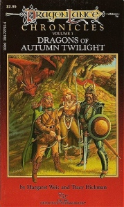
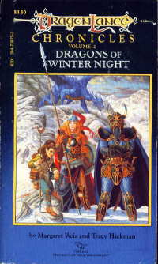
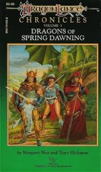

The Chronicles
The Chronicles trilogy was a pivotal series as it jump-started the Dragon Lance series all together and has had an early success rate in its first year. By 2008 over 190 separate novels has been written for this series and has exceed 22 million in sales. One little idea has grown into a very large and beloved series.
Dragons of Autumn Twilight
The companions reunited once again from their five-year separation. But all is not well. Many new reports of strange creatures and an army massing have everyone wondering. Reports of a strange blue crystal staff with mystical powers have been seen and searched for. Is this a sign of the gods of old or some cheap charlatan trick? Our heroes are sent on a quest to uncover the truth of the staff and what it may mean.
Dragons of Winter Night
On the run from the draconian armies after escaping from Pax Tharkas and facing off against High Lord Verminaard, our companions are looking for a home and transportation for the prisoners. After being separated at Tarsis our companions go in search of a powerful artifact called the Dragon Orb. The Dragon Orb is said to be able to call and control the minds of dragons. Will this be the solution to end the growing conflict?
Dragons of Spring Dawning
As the conflict grows into full continental conflict the Dragons of Good finally make their appearance. High Lord Ariakas formulates to conquer the continent and end the war. Will the Golden General be able to lead her troops to victory? Will Raistlin choose to serve good or evil? In the end who does Tanis love: Laurana his long-time childhood elven friend or Kitiara his once human companion? And is the Everman the solution to the conflict.